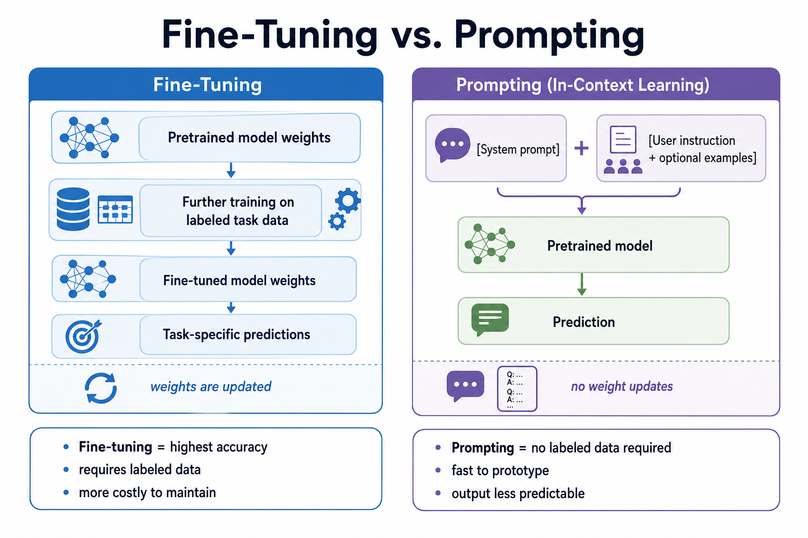
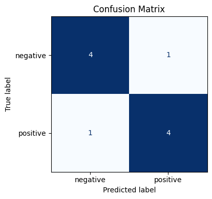

Remark
These lecture notes are in early access and will continue to evolve based on classroom experience and feedback.
1.5. Modern Modeling and Evaluation Strategies#
1.5.1. Learning Objectives#
By the end of this section, you should be able to:
Contrast classical feature-based models with neural and transformer-based approaches.
Explain at a high level how transformers and large language models (LLMs) operate.
Use a pre-trained transformer for a downstream NLP task with minimal code.
Load and explore benchmark datasets using the Hugging Face
datasetslibrary.Identify appropriate evaluation metrics for common NLP tasks and explain their formulas.
Conduct a basic error analysis for an NLP or LLM-based system.
Discuss safety, bias, and robustness considerations in LLM evaluation.
Section Goal
Having built a corpus, preprocessed it, and understood its linguistic structure, the final step is to model and evaluate. This section introduces the landscape of NLP modeling — from classical feature-based approaches to modern transformer-based systems and LLMs — and equips you with a principled evaluation toolkit. You will learn how to choose metrics, conduct error analyses, and think critically about bias, safety, and responsible deployment.
1.5.2. From Features to Representations#
Early NLP models relied heavily on manual feature engineering. Typical pipelines involved:
Converting documents into bag-of-words or tf–idf vectors (Section 1.4).
Designing task-specific features (e.g., word shape, capitalization, lexicon membership, character n-grams).
Training linear models such as logistic regression or support vector machines (SVMs).
While still useful for some applications, this approach does not scale well to complex language phenomena. Modern NLP shifts the focus from hand-crafted features to learned representations:
Word embeddings (e.g., word2vec, GloVe, fastText) map words to dense vectors where semantic similarity corresponds to geometric proximity.
Contextual embeddings from transformer-based models represent each token in context, allowing the same word to have different vectors depending on its usage.
Sentence and document embeddings capture the meaning of larger text spans in fixed-length vectors.
These representations provide a common currency that can be reused across tasks and models, eliminating most of the domain-specific feature engineering work.
In your own projects — for example, clustering environmental reports or classifying public-health advisories — you will have opportunities to compare classical tf–idf features with modern embedding-based representations and evaluate their trade-offs in performance and interpretability.
1.5.2.1. Comparing TF-IDF and Sentence Embeddings#
TF-IDF cosine similarity matrix:
[[1. 0.319 0. ]
[0.319 1. 0. ]
[0. 0. 1. ]]
Docs 0 & 1 share vocabulary ('heavy', 'river') → high TF-IDF similarity
Docs 0 & 2 share no vocabulary → near-zero TF-IDF similarity
Sentence embeddings from pre-trained transformers would typically also give high similarity for docs 0 and 1, and are expected to better handle paraphrase cases where synonyms are used instead of exact words (e.g., “rainfall” ↔ “rain”, “flooded” ↔ “overflow”) — because they capture meaning rather than surface form.
1.5.3. Transformers and Large Language Models#
1.5.3.1. The Transformer Architecture#
Transformers are neural architectures designed to model sequences using self-attention rather than recurrence. This is the foundational architecture behind BERT, GPT, LLaMA, and virtually all modern LLMs.
At a high level, a transformer processes a sequence of tokens by:
Embedding each token into a dense vector (token embedding).
Adding positional information so the model knows the order of tokens (positional encoding).
Passing the sequence through multiple transformer layers, each consisting of:
A multi-head self-attention sublayer.
A feed-forward sublayer.
Layer normalization and residual connections.
Producing output representations that can be used for classification, generation, etc.
Key Term — Self-Attention
Self-attention allows each token in a sequence to “attend” to every other token and gather contextual information. For each token, the model computes:
A query vector: “what am I looking for?”
A key vector: “what do I offer?”
A value vector: “what information do I carry?”
The attention score between token i and token j is the dot product of i’s query and j’s key, scaled and passed through softmax. The output for token i is a weighted sum of all value vectors. This lets “bank” in “river bank” attend strongly to “river” and less to financial terms — giving it the correct contextual meaning.
Multiple attention heads (multi-head attention) run this process in parallel with different learned weight matrices, allowing the model to simultaneously capture different types of relationships (e.g., syntactic, semantic, positional).
1.5.3.2. Encoder, Decoder, and Encoder-Decoder Architectures#
Transformers come in three architectural families, each suited to different task types:
Architecture |
Direction |
Pretraining objective |
Representative models |
Typical tasks |
|---|---|---|---|---|
Encoder-only |
Bidirectional |
Masked Language Modeling (MLM) |
BERT, RoBERTa, DistilBERT |
Classification, NER, QA (span extraction) |
Decoder-only |
Left-to-right (causal) |
Causal Language Modeling (CLM) |
GPT-2/3/4, LLaMA, Mistral |
Text generation, dialogue, code |
Encoder-decoder |
Bidirectional encoder + causal decoder |
Span corruption (T5) or denoising |
T5, BART, mT5 |
Translation, summarization, QA (abstractive) |
Encoder-only models process the full sequence in both directions, producing rich representations useful for understanding tasks. The pretraining objective (MLM) randomly masks tokens and trains the model to predict them from context.
Decoder-only models predict one token at a time, each conditioned only on previous tokens. This autoregressive structure makes them natural text generators. Most modern LLMs (GPT-4, LLaMA, etc.) are decoder-only.
Encoder-decoder models use an encoder to build a rich representation of the input and a decoder to generate the output one token at a time, attending to both the encoder output and previously generated tokens.
1.5.3.3. Language Modeling and Perplexity#
The foundational objective behind decoder-only LLMs is causal (autoregressive) language modeling: given a sequence of tokens \((w_1, w_2, \ldots, w_{t-1})\), predict the probability of the next token \(w_t\) [Vaswani, 2017].
The model is trained to maximize the log-likelihood of the training corpus — equivalently, to minimize the cross-entropy loss:
Perplexity is the standard intrinsic evaluation metric for language models. It is defined as the exponentiated average negative log-likelihood [Jelinek et al., 1977]:
Interpreting Perplexity
Perplexity measures how “surprised” the model is by a held-out test set. Intuitively, a perplexity of k means the model is, on average, as uncertain as if it had to choose uniformly among k equally likely options at each step.
Lower perplexity = better model: a model with perplexity 20 is more confident (and accurate) than one with perplexity 100.
Perplexity is vocabulary-dependent and should only be compared between models using the same tokenizer and test set.
Perplexity captures fluency, not factual correctness or usefulness — a model can achieve low perplexity while still generating hallucinated content.
1.5.3.4. Fine-Tuning vs. Prompting#
Two paradigms exist for applying pretrained models to downstream tasks:
Fine-tuning — continue training the model (or a subset of its parameters) on a labeled dataset for the target task. The model’s weights are updated to specialize on the task.
{kind=link}

Fig. 1.4 Fine-tuning updates model weights on labeled task data, whereas prompting uses in-context instructions without changing the pretrained parameters.#
Advantages: typically the highest accuracy; output format is controlled.
Disadvantages: requires labeled data; expensive to maintain separate models per task.
Prompting (in-context learning) — provide the pretrained model with a natural language instruction and optionally a few examples, without updating weights.
[System prompt: "You are a helpful assistant."]
[User: "Classify this review as positive or negative: 'The water quality improved dramatically.'"]
[Model: "Positive"]
Advantages: no labeled data required for zero-shot; few examples suffice for few-shot.
Disadvantages: output quality and format less predictable; sensitive to prompt wording.
Modern workflows often combine both: use prompting for rapid prototyping, then fine-tune when consistent, structured output is required.
1.5.3.5. Example: Sentiment Analysis with a Pre-Trained Transformer#
The following minimal example uses a compact transformer-based model via the Hugging Face transformers library to perform sentiment analysis:
Device set to use cuda:0
I really enjoyed this course on NLP and LLMs! -> {'label': 'POSITIVE', 'score': 0.9998351335525513}
The model's responses were inconsistent and sometimes misleading. -> {'label': 'NEGATIVE', 'score': 0.9990687966346741}
This example illustrates several important ideas:
We can reuse a pre-trained model without training from scratch — the model already knows English.
The same pipeline can be applied to multiple inputs with minimal code.
The output includes both a label and a confidence score, which are crucial for downstream decision-making and threshold selection.
Later in the course, we will extend this pattern to other tasks (e.g., NER, QA, summarization) and compare it to prompting LLMs directly.
1.5.3.6. Example: Zero-Shot Classification#
LLMs and modern fine-tuned models can classify text into categories they have never explicitly been trained on, given only a natural language label description:
Device set to use cuda:0
climate science 0.9281
economics 0.0328
technology 0.0226
sports 0.0165
Zero-shot classification is especially valuable when you lack labeled training data for a new domain. Under the hood, this model frames classification as a natural language inference task: “does this text entail [label]?”
1.5.4. Working with Benchmark Datasets#
The Hugging Face datasets library provides a unified API for loading, exploring, and processing hundreds of NLP benchmarks.
DatasetDict({
train: Dataset({
features: ['text', 'label'],
num_rows: 25000
})
test: Dataset({
features: ['text', 'label'],
num_rows: 25000
})
unsupervised: Dataset({
features: ['text', 'label'],
num_rows: 50000
})
})
[negative] I rented I AM CURIOUS-YELLOW from my video store because of all the controversy that surrounded it w...
[negative] "I Am Curious: Yellow" is a risible and pretentious steaming pile. It doesn't matter what one's poli...
[negative] If only to avoid making this type of film in the future. This film is interesting as an experiment b...
Context : Super Bowl 50 was an American football game to determine the champion of the Nat...
Question : Which NFL team represented the AFC at Super Bowl 50?
Answer : Denver Broncos
Context : Super Bowl 50 was an American football game to determine the champion of the Nat...
Question : Which NFL team represented the NFC at Super Bowl 50?
Answer : Carolina Panthers
Context : Super Bowl 50 was an American football game to determine the champion of the Nat...
Question : Where did Super Bowl 50 take place?
Answer : Santa Clara, California
Context : Super Bowl 50 was an American football game to determine the champion of the Nat...
Question : Which NFL team won Super Bowl 50?
Answer : Denver Broncos
Context : Super Bowl 50 was an American football game to determine the champion of the Nat...
Question : What color was used to emphasize the 50th anniversary of the Super Bowl?
Answer : gold
Benchmark datasets come with train/validation/test splits designed to support fair model comparison. Using the same splits and evaluation scripts as the original benchmark is essential for reproducibility. Reporting results on the test set should only happen after all hyperparameter decisions have been made using the validation set.
1.5.5. Evaluation Metrics and Strategies#
Evaluation in NLP serves multiple purposes: comparing models, guiding model selection, and assessing whether systems are fit for deployment.
1.5.5.1. Classification Metrics: Precision, Recall, and F1#
For classification and sequence labeling tasks, the core metrics are:
Precision, Recall, and F1 — Definitions
Given a confusion matrix with TP (true positives), FP (false positives), and FN (false negatives) [Van Rijsbergen, 1979]:
Precision: of all instances the model labeled as positive, what fraction actually were positive? (“When you sound the alarm, how often is it real?”)
Recall: of all actual positive instances, what fraction did the model catch? (“Of all real alarms, how many did you sound?”)
F1: harmonic mean of precision and recall. Useful when you want a single number that balances both.
The harmonic mean penalizes imbalance between precision and recall more than the arithmetic mean: a system with precision=1.0 and recall=0.01 would have F1=0.02, not 0.5.
precision recall f1-score support
negative 0.80 0.80 0.80 5
positive 0.80 0.80 0.80 5
accuracy 0.80 10
macro avg 0.80 0.80 0.80 10
weighted avg 0.80 0.80 0.80 10
1.5.5.2. Visualizing a Confusion Matrix#
A confusion matrix reveals exactly where your classifier succeeds and fails. For a binary classifier, four cells tell the whole story:

True Positives (correctly predicted positive): 4
True Negatives (correctly predicted negative): 4
False Positives (negative predicted as positive, 'false alarm'): 1
False Negatives (positive predicted as negative, 'miss'): 1
Precision = 0.80 | Recall = 0.80
In a real application (e.g., flood-severity classification), a false negative (missing a severe flood) may be far more costly than a false positive — which motivates choosing recall over precision as the primary metric and selecting a classification threshold that reflects the real-world stakes.
1.5.5.3. Common Metrics by Task#
Task type |
Typical metrics |
|---|---|
Classification / tagging |
Accuracy, precision, recall, F1 |
Sequence labeling (NER) |
Token-level and entity-level F1 |
Machine translation |
BLEU, chrF, COMET |
Summarization |
ROUGE-1/2/L, BERTScore, human ratings |
Language modeling |
Perplexity |
Retrieval / ranking |
MAP, MRR, nDCG |
However, numerical metrics alone are rarely sufficient. We also need:
Qualitative analysis: inspecting model outputs to understand typical successes and failures.
Human evaluation: using human raters to assess fluency, relevance, faithfulness, and usefulness.
Robustness checks: testing models on perturbed or out-of-distribution inputs.
1.5.5.4. ROUGE for Summarization#
ROUGE (Recall-Oriented Understudy for Gisting Evaluation) measures lexical overlap between a model-generated summary (hypothesis) and one or more reference summaries. The main variants:
ROUGE Variants — Definitions
Let H be the hypothesis (generated text) and R be the reference.
ROUGE-N measures n-gram overlap [Lin, 2004]:
(1.6)#\[\begin{align} \text{ROUGE-N} = \frac{\text{number of matching N-grams between H and R}}{\text{number of N-grams in R}} \end{align}\]ROUGE-1 uses unigrams; ROUGE-2 uses bigrams.
ROUGE-L uses the longest common subsequence (LCS) rather than contiguous n-grams, allowing for some word order flexibility.
ROUGE is recall-oriented by default (denominator = reference length). Modern implementations report precision, recall, and F1 for each variant.
rouge1: precision=0.500, recall=0.600, fmeasure=0.545
rouge2: precision=0.182, recall=0.222, fmeasure=0.200
rougeL: precision=0.250, recall=0.300, fmeasure=0.273
Limitation of ROUGE: it counts exact word matches. A perfect paraphrase using different vocabulary will score zero. This motivates semantic evaluation metrics like BERTScore.
1.5.5.5. BLEU for Machine Translation#
BLEU (Bilingual Evaluation Understudy) [Papineni et al., 2001] is the standard metric for machine translation. It measures n-gram precision between the hypothesis and reference translations, with a brevity penalty for short outputs:
BLEU — Definition
where:
\(p_n\) = precision of n-grams of order n (clipped to reference count).
\(w_n\) = uniform weight \(= 1/N\) (usually \(N=4\)).
\(BP\) = brevity penalty: \(\min(1, e^{1 - r/c})\) where r is reference length and c is hypothesis length.
BLEU scores range from 0 to 1 (often reported ×100). A score above 0.4 is generally considered good for news translation; domain and language pair matter significantly.
Key limitations: BLEU does not capture meaning (paraphrases score low), it assumes one correct reference, and it correlates imperfectly with human judgments on modern high-quality MT systems.
1.5.5.6. BERTScore: Semantic Similarity for Generation Tasks#
BERTScore addresses ROUGE’s and BLEU’s shared limitation — they measure lexical, not semantic, similarity. BERTScore uses contextual embeddings from a transformer model to compare hypothesis and reference:
Obtain contextual embeddings for all tokens in the hypothesis and reference.
For each hypothesis token, find the most similar reference token (cosine similarity).
Report precision, recall, and F1 over these token-level similarities.
Some weights of RobertaModel were not initialized from the model checkpoint at roberta-large and are newly initialized: ['pooler.dense.bias', 'pooler.dense.weight']
You should probably TRAIN this model on a down-stream task to be able to use it for predictions and inference.
Pair 1: BERTScore P=0.921 R=0.930 F1=0.925
Pair 2: BERTScore P=0.916 R=0.916 F1=0.916
Interpretation: BERTScore F1 > 0.90 typically indicates high semantic similarity. Compare this with ROUGE scores: ROUGE for the first pair above may be moderate (different words), but BERTScore should be high (same meaning). This illustrates why it is useful to report both metrics, especially when evaluating abstractive summarization or paraphrase generation.
1.5.6. Error Analysis#
A systematic error analysis is often more useful than aggregate metrics for guiding model improvement. A basic plan:
Sample errors: collect a representative set of examples where the model fails.
Categorize: group errors by type (e.g., wrong entity boundary, wrong sentiment polarity, hallucinated fact).
Quantify: estimate the frequency of each error category.
Hypothesize cause: identify whether errors trace back to data quality, model capacity, preprocessing decisions, or evaluation criteria.
Iterate: change one factor at a time and measure the impact.
text true pred category
0 Not bad! positive negative negation
1 The film was okay I guess. neutral positive hedging
2 Absolutely terrible. negative positive strong negation
Error categories:
category
negation 1
hedging 1
strong negation 1
Name: count, dtype: int64
From this analysis we can see that negation handling is a recurring failure mode. The model likely did not see enough negation examples in training, or the negation is not captured by the token representations. Targeted data augmentation (adding more negation examples) or a preprocessing step that handles negation explicitly could address this.
1.5.7. Safety, Bias, and Responsible Deployment#
As LLMs move into high-impact applications, responsible evaluation must extend beyond accuracy:
Bias and fairness: Models may replicate or amplify societal biases present in training data (e.g., stereotypes about gender, race, or profession). Evaluating for demographic parity and counterfactual fairness is important in high-stakes settings.
Hallucinations: LLMs can generate fluent but incorrect or fabricated information, especially when prompted with incomplete or ambiguous context. Unlike a search engine, an LLM does not “know” when it doesn’t know.
Privacy and security: Training data and model usage may raise privacy concerns, especially if sensitive information is inadvertently memorized (e.g., personal details, passwords in training corpora).
Alignment and controllability: Ensuring models follow instructions while respecting ethical and legal constraints is an active area of research (RLHF, Constitutional AI, etc.).
Throughout this course, we will return to these themes and discuss practical strategies for:
Curating and documenting datasets carefully.
Designing evaluation protocols that reflect real-world requirements.
Communicating model limitations to stakeholders and end users.
1.5.8. Evaluation Checklist#
When deploying an NLP or LLM-based system, walk through a checklist such as:
Task clarity
What exactly is the system supposed to do?
How will outputs be consumed by humans or downstream systems?
Data representativeness
Does the evaluation data reflect the diversity of inputs the system will see in practice?
Are important subpopulations adequately represented?
Metric suitability
Do your metrics capture what “good performance” means for stakeholders?
Is there a mismatch between automatic metrics and human judgments?
Robustness and safety
How does the system behave under noise, adversarial prompts, or distribution shifts?
Are there mechanisms for detecting and mitigating harmful outputs?
Transparency and documentation
Is there a model card or system card describing training data, evaluation, and limitations?
Are users given guidance on appropriate and inappropriate uses?
1.5.9. Model Cards: Documenting What You Build#
Alongside dataset cards (Section 1.2), model cards document the properties, limitations, and intended use of a trained model. A minimal model card includes:
Model Card: Flood Severity Classifier v1.0
Model type: Fine-tuned DistilBERT (binary classification)
Task: Classify whether a news article describes a severe (label 1) or minor (label 0) flood event
Training data: 2,400 labeled articles from [Corpus Name], balanced across severity labels
Evaluation: F1 = 0.87 on held-out test set (n = 300); performance is lower on articles from non-English-speaking regions due to limited training data coverage
Intended use: Research and journalistic analysis of flood risk communication
Out-of-scope use: Medical or emergency management decision support without additional validation
Limitations: Model may underperform on historical articles (pre-2000) due to vocabulary drift
Contact: [Author, Institution, Year]
Key Takeaways
Classical NLP models rely on hand-crafted features (tf–idf, word shapes, lexicons) and linear classifiers. They are fast, interpretable, and still competitive on narrow tasks with small datasets.
Transformer-based models use self-attention to build context-dependent representations. The key architectural variants are encoder-only (BERT), decoder-only (GPT), and encoder-decoder (T5/BART), each suited to different task families.
LLMs enable zero-shot and few-shot task performance through natural language prompting, without task-specific training. Fine-tuning achieves higher accuracy when labeled data is available; prompting is faster to iterate.
Perplexity is the standard intrinsic metric for language models — it measures how “surprised” the model is by unseen text. Lower perplexity = better fluency prediction, but not necessarily factual accuracy.
Evaluation metrics must match the task and the deployment stakes: precision/recall/F1 for classification; ROUGE and BERTScore for generation (ROUGE captures lexical overlap, BERTScore captures semantic similarity); BLEU for translation; perplexity for language modeling.
Error analysis is often more actionable than aggregate metrics: categorizing and quantifying failure modes guides targeted improvements in data, preprocessing, and modeling.
Safety and bias are first-class evaluation concerns, especially for LLMs in high-stakes domains. Hallucinations, demographic bias, and prompt sensitivity all require dedicated evaluation protocols.
Model cards document what a system does, on what data it was evaluated, and what its limitations are — they are the basis for responsible deployment.
1.5.10. Exercises and Discussion#
Metric selection
For each of the following tasks, propose at least two evaluation metrics and justify your choices:
(a) Toxic comment detection; (b) News headline generation; (c) Scientific abstract summarization.Perplexity intuition
Suppose language model A has perplexity 15 and model B has perplexity 80 on the same test set. Which model assigns higher probability to the test data? What does this say about which model would be better for autocompletion? Would lower perplexity necessarily make model A better for a task like summarization?Fine-tuning vs. prompting trade-offs
You need to classify 10,000 customer support tickets as “billing issue”, “technical problem”, or “other”. You have 50 labeled examples. Describe the trade-offs of (a) zero-shot prompting an LLM, (b) few-shot prompting with 10 examples per class, and (c) fine-tuning DistilBERT on the 50 examples.Error analysis plan
Suppose you build a question-answering system over environmental reports. Outline a plan for qualitative error analysis: how will you categorize errors, what examples will you inspect, and how will you feed insights back into model and data improvements?Safety scenario
Imagine deploying an LLM-based assistant in a healthcare setting (e.g., patient information triage). List at least three potential risks and propose safeguards at the data, model, and interface levels.Benchmark exploration
Load theimdbdataset usingdatasetsand run the DistilBERT sentiment classifier on a sample of 20 examples. Compute accuracy and F1. Then sample five errors and attempt to categorize them (negation, sarcasm, hedging, domain shift, other). What patterns do you notice?
By the end of this course, you should be able to evaluate both classical and LLM-based NLP systems in a way that balances performance, interpretability, and societal impact.